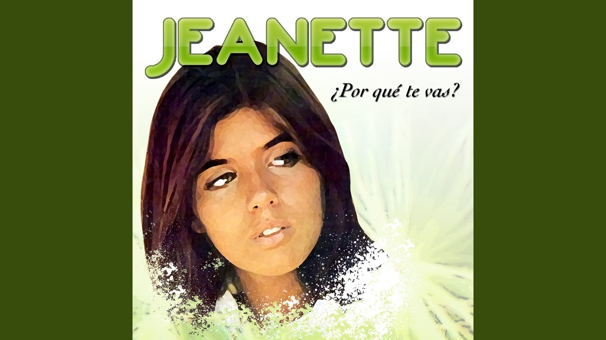

Videos
Playlist
Artistas
Descubre Música Increíble
Los mejores videos musicales y artistas en un solo lugar
Explorar Ahora
Videos Destacados
Insaciable
Eddier Posada
Regional mexicana
A Donde Vayas
Eddier Posada
Regional mexicana
Me Tomas y Me Dejas
Eddier Posada y Omairy Nuñez
Desconocida
Mi Playlist Favorita
Porque te vas?
Tu navegador no soporta el elemento de audio.
Jeanette
3:22
Pero Tu No Estas
Tu navegador no soporta el elemento de audio.
Luis Angel
2:53
Paro
Tu navegador no soporta el elemento de audio.
NEJ'
3:23
Esta Cobardía
Tu navegador no soporta el elemento de audio.
Chiquetete
3:41
Simarik
Tu navegador no soporta el elemento de audio.
Tarkan
3:56
Artistas
Eddier Posada
Género: Regional mexicana

Jeanette
Género: Pop
Luis Miguel
Género: Pop latino